MannyPay支付渠道接入 · 新增 MannyPay 收款与代付渠道 · 产品开发需求文档（PRD）· v1.0
需求版本管理表
| 版本号 | 时间 | 修改人 | 概述 | 涉及章节 |
|---|---|---|---|---|
| v1.0 | 2026-11-04 | Joshua | 创建MannyPay支付渠道接入 v1.0 | 全文 |
全文目录
0. 本迭代范围
本迭代按现有资金渠道配置流程接入 MannyPay：收款时在「在线支付配置」新增一条 MannyPay 配置，前台 Deposit 多一个可配置的 GCash 类标签（QRPh 二维码）；出款时作为代付渠道（InstaPay），并把 MannyPay 加入现有的配置、主备切换、出款、报表和监控入口。与其他章节冲突时，以本章为准。
| 类别 | 本迭代包含 | 顺延至 |
|---|---|---|
| 前台（H5 / iOS / Android） | Deposit「Payment Method」新增一个 MannyPay 标签（名称由后台配置，示例 GCash6）；到账、记录沿用现有；Withdraw 页不改 | - |
| 后台 · 入款 | 在线支付配置新增支付类型 MannyPay；支付渠道动态配置中 MannyPay 可作其他配置的备用渠道，也可设自己的备用渠道 | - |
| 后台 · 出款 | 绑定银行配置、三方出款、重新出款新增 MannyPay（代付走 InstaPay）；出款结果和失败处理沿用现有 | - |
| 后台 · 财务与监控 | 财务总表、手续费设置、财务数据余额卡片、监控大盘新增 MannyPay | - |
| 不包含 | MannyPay 的 PESONet 出款（单笔 > ₱50,000）、扫码付款（Scan-to-Pay）、资金划转到 AllBank OPC 账户（Intrabank）；前台提款页不改 | 不顺延（见 Q3、Q7） |
1. 项目概述
| 项目 | 说明 |
|---|---|
| 需求描述 | 在管理后台【充值配置 › 在线支付配置】的「支付类型」新增 MannyPay，运营新增一条 MannyPay 配置后，前台 Wallet › Deposit 的「Payment Method」多一个标签（名称取「支付名称」，示例 GCash6）；【充值配置 › 绑定银行配置】和【财务管理 › 提款记录】的代付渠道新增 MannyPay，并在【支付渠道动态配置】【财务总览】【平台概况】加入 MannyPay；其余充值、提款规则沿用现有。 |
| 背景与目标 | 平台新增第三方支付渠道 MannyPay（依据：MannyPay API v1.2 文档）。目标：GCash 收款多一条可与现有标签互为主备的渠道，出款多一条代付渠道，主渠道异常时可切换，降低出入金中断风险。 |
| 范围 | 做：第 0 章「本迭代包含」。不做：第 0 章「不包含」。 |
| 多端范围 | H5、iOS、Android：做（充值页同一套规则）；后台：做；PC：沿用 H5。 |
| 时间与时区 | 全文时间为 GMT+8。 |
2. 整体业务流程
2.1 充值主流程（用户视角）
2.2 充值结果分支（按 MannyPay 结果）
A - 支付成功
B - 未付款就关闭支付页
C - 支付失败 / 过期
2.3 出款主流程（运营视角）
2.4 系统时序
| 触发 | 执行方 | 动作 |
|---|---|---|
| 用户点「提交」 | 平台 | 校验金额 → 生成处理中订单 → 向 MannyPay 申请二维码 → 打开支付页 |
| 用户付款 | MannyPay → 平台 | MannyPay 通知支付结果；平台核对订单和金额后入账或记失败；没收到通知时平台主动查询（时效由技术确定） |
| 运营或系统发起出款 | 平台 → MannyPay | 发起 InstaPay 代付 → 订单出款中 → 取得结果后更新订单 |
| 打开财务数据页 | 平台 → MannyPay | 查询 MannyPay 余额 → 按阈值显示颜色 |
3. 业务规则
3.1 现状（不改动，仅作依据）
| 规则 | 说明 | 依据 |
|---|---|---|
| 充值限额 | 取用户支付层级限额与在线支付配置最小 / 最大金额的交集；超出提示「Please enter an amount between x-xxx」 | 789Bingo平台知识库 §6.2 |
| 充值成功弹窗 | 只有真实到账后才弹出；按钮 Confirm / Play Now / Deposit Record | 789Bingo平台知识库 §6.2 |
| 前台充值标签 | Deposit「Payment Method」的每个标签，是在线支付配置里一条状态为「正常」的配置，名称取「支付名称」。UAT 现有：GCASH（GCASH）、GCash3（PayMongo）、Maya（PayMaya）、GCash4（Traxion Pay）、Bank Card（QRPH） | UAT 后台实查（2026-11-04） |
| 在线支付配置 | 字段：支付类型、不可见地区、支付名称、商户号、第三方公钥、第三方域名、终端号、扩充资讯、请求网址、最小 / 最大金额、手续费、返利、流水倍数、币种、状态（正常 / 停用 / 维护）、通道模式、前台维护说明、前端 / 后台备注说明、是否需要填写账号 / 邮箱、层设置、排序；操作有编辑、启用 / 停用、删除、复制。支付类型现有 Dragonpay、FortunePay、MayaMini-789Play、PayMaya、GCASH、CoinPH、PayMongo、QRPH、PayCools、Traxion Pay、Starpay | UAT 后台实查（2026-11-04）；管理后台知识库 §4.8 |
| 动态切换 | 主渠道下单失败或成功率下降时，系统按「支付渠道动态配置」切到备用渠道并记录 | 管理后台知识库 §4.8、§11.8 |
| 代付渠道 | 绑定银行配置决定会员提款到某银行 / 电子钱包时走哪个代付渠道，现有 PayMongo、CoinPH、UnionBank、Dragonpay、Paycools、Starpay；UAT 中 GCash → Starpay，paymaya → PayMongo；有「批量替换代付渠道」 | 管理后台知识库 §4.8 |
| 手续费规则 | 按「类型 + 充值/出款渠道」配置；手续费模式分固定费率 / 阶梯费率，手续费类型分按笔计算 / 按费率计算，阶梯费率按金额区间设置 | QA 后台实查（2026-11-04） |
| 大额提现拆单 | 提现管理 › 提现出款设置 › 大额提现拆单设置：设置单笔最大出款金额和拆单后最小单笔出款金额，全局设置，GCash、Maya 可单独设置；银行卡提现是否拆单资料未覆盖（Q9） | QA 后台实查（2026-11-04） |
| 收款渠道切换 | QRPH、BANKCARD 类型同一时间只能启用一个收款渠道，启用新渠道会自动停用同类型的其他渠道 | QA 后台实查（2026-11-04） |
| 待处理订单状态 | 三方出款订单显示三方排队中 / 三方无响应、等待时长、是否超时 | QA 后台实查（2026-11-04） |
| 出款异常单 | 三方出款失败或三方返回成功但玩家未到账的订单进入；异常原因有「出款成功玩家未到账」「其它」；可重新出款或驳回，未到账的按补单流程处理 | QA 后台实查（2026-11-04）；管理后台知识库 §4.8 |
| 渠道熔断告警 | 提款记录有「异常记录」（渠道熔断告警）和「渠道切换记录」 | QA 后台实查（2026-11-04） |
| 新用户坑位与排序 | 新用户前 3 次默认 GCash 原生；PWA 单独排序；充值活动和挽留弹窗按现有配置 | 789Bingo平台知识库 §6.2 |
3.2 本需求规则
| 编号 | 规则 | 起因 | 功能点 |
|---|---|---|---|
| N1 | 在线支付配置的「支付类型」下拉新增 MannyPay（收款方式为 QRPh 二维码，玩家用 GCash 付款）；可配多条，表单字段（含对接参数）和必填校验与现有支付类型一致。MannyPay 是独立的支付类型，不进入现有「收款渠道切换」（QRPH / BANKCARD 同一时间只能启用一个渠道的规则不适用），不影响 Bank Card（QRPH）。状态为「正常」时前台 Deposit 新增一个标签：名称取「支付名称」（运营填写，示例 GCash6），前台不显示「MannyPay」字样；图标沿用现有 GCash 类标签图标；排序、层设置、不可见地区按配置。其他标签不受影响。 | 接入新渠道 | F02-01 在线支付配置新增 MannyPay |
| N2 | 可充区间 = [配置最小金额, min(层级每笔最高充值, 配置最大金额)]，金额为整数 PHP；当日累计充值受层级「当日最高充值」限制（沿用现有）。不在区间内提示「Please enter an amount between x-xxx」（沿用现有）。后台最小金额、最大金额为 ≥ 1 的整数；最小金额大于最大金额时不能保存，提示「最小金额不能大于最大金额」。 | 沿用现有限额规则 | F01-01 充值方式展示与金额校验 |
| N3 | 点「提交（Submit）」后生成状态为「处理中」的充值订单并打开 MannyPay 二维码支付页。MannyPay 下单失败或超时时不打开支付页，订单记为失败，前台提示「This method is unavailable. Please try another.」（线上已有同类提示时用线上文案），并计入该渠道下单失败次数（触发 N16 动态切换）。按钮提交中置灰，重复点击只生成一笔订单。 | 二维码由 MannyPay 生成 | F01-02 二维码支付 |
| N4 | 二维码有效期以 MannyPay 规则为准，平台不另设；过期仍未付款的订单按平台现有充值订单超时规则记为「失败」，上线前核对平台超时时间不短于二维码有效期。已记失败的订单之后收到 MannyPay 成功结果且金额一致时：订单改为「成功」并入账一次，发到账短信和 push，状态变更写入订单日志；玩家不在充值页时不补弹成功弹窗。金额不一致按 N5 人工核对。 | Q1 确认：以平台现有规则和 MannyPay 规则为准 | F01-03 支付结果与入账 |
| N5 | 只有 MannyPay 确认支付成功（推送通知或平台查询结果）且金额与订单一致时入账，订单变「成功」并弹出现有充值成功弹窗。同一订单只入账一次，重复通知不重复入账；签名校验不通过的通知一律不处理，并记录告警。金额不一致时不自动入账，订单进入人工核对（沿用现有充值记录「通过 / 驳回」）：通过时按 MannyPay 确认的实付金额入账，赠送和流水按实付金额计算，记录操作人；驳回时不入账，订单记为失败。到账短信和 push 按现有规则发送。 | 资金安全；账变短信门槛（规范第五章第 2 节） | F01-03 支付结果与入账 |
| N6 | 用户未付款就关闭二维码支付页时，回到充值记录页并显示该笔「处理中」订单，不弹成功弹窗；之后付款成功仍按 N5 入账。处理中订单计入现有「未处理线上充值订单数上限」。 | 沿用现有回跳规则 | F01-03 支付结果与入账 |
| N7 | 配置状态「正常」：前台显示可选；「维护」：前台置灰、显示「前台维护说明」，不能选；「停用」：前台不显示。状态为维护时维护说明必填，未填提示「状态为维护时请填写前台维护说明」；维护说明由运营用英文填写。保存后用户下一次打开充值页生效，已生成的订单不受影响。玩家停在充值页期间配置有变化时，点「提交」按最新配置校验：已维护或停用的不下单，提示「This method is unavailable. Please try another.」并刷新支付方式；坑位已切到备用渠道的，按备用渠道下单。 | 沿用现有状态规则 | F02-01 在线支付配置新增 MannyPay |
| N8 | 绑定银行配置的代付渠道新增 MannyPay（单选，与 PayMongo、CoinPH、UnionBank、Dragonpay、Paycools、Starpay 并列）；代付方式自动 / 手动沿用现有。修改后只影响之后发起的出款，出款中的订单不受影响。批量替换代付渠道沿用现有：原代付渠道为所选渠道的银行全部替换为新渠道，可替换为 MannyPay；系统不判断银行是否支持 MannyPay，由运营替换前自行确认。 | 新代付渠道 | F03-01 绑定银行配置新增 MannyPay |
| N9 | 待处理订单「出款 › 三方代付」的出款类型、出款异常单「重新出款」的出款渠道新增 MannyPay；选择后点「确定 / 确认发起」即向 MannyPay 发起代付，未选择时提示「请选择出款渠道」。 | 人工出款入口 | F03-02 三方出款 |
| N10 | 按平台现有方式处理：三方出款、重新出款、自动代付都可以选 MannyPay，不按金额置灰或拦截。MannyPay 代付走 InstaPay，单笔上限 ₱50,000，按实际出款金额（扣除手续费后）判断（口径见 Q10）；超过时 MannyPay 返回失败，订单按 N12 转入出款异常单，运营换其他渠道重新出款。大额提现拆单按现有设置执行（全局、GCash、Maya 分别设置；银行卡提现是否拆单以现有规则为准，见 Q9），是否调整由运营决定。 | Q3 确认：按平台现有方式，其他代付渠道没有按渠道的单笔上限 | F03-04 出款通道与结果 |
| N11 | 绑定银行配置不新增列、不区分银行是否支持 MannyPay，只在「添加 / 编辑银行配置 › 代付渠道」里新增 MannyPay，由运营只给 MannyPay 可出款的银行选 MannyPay。收款银行 MannyPay 不支持时出款失败，按 N12 转入出款异常单。 | Q4 确认 | F03-01 绑定银行配置新增 MannyPay |
| N12 | 发起后订单变「出款中」，出款和驳回按钮置灰，同一订单不能再次发起；排队、无响应和超时的显示沿用现有待处理订单状态（三方排队中 / 三方无响应、等待时长 / 是否超时）。按 MannyPay 结果处理：① 明确返回成功 → 「出款成功」；② 明确返回失败（如渠道余额不足、收款账户无效、超过单笔上限）→ 订单转入「出款异常单」，异常原因显示「其它：MannyPay 返回的原因」，之后按现有流程重新出款或驳回；③ 结果未知 → 保持出款中，由平台查询确认，不重新发起，超过 30 分钟仍无结果由运营转技术核查。只有明确返回失败才转入异常单。已转入异常单或已换渠道出款后又收到 MannyPay 成功结果：不改变现有出款结果，提款记录中标记「疑似重复出款」并告警，由财务核对追回。MannyPay 返回成功但玩家未到账：按现有出款异常单补单流程处理，补单前先向 MannyPay 查询确认。 | 防重复出款 | F03-04 出款通道与结果 |
| N13 | 手续费设置「新增规则」的渠道下拉，类型为充值和提款时都新增 MannyPay；手续费模式（固定 / 阶梯费率）、手续费类型（按笔 / 按费率）、手续费值、备注、状态沿用现有，手续费值由运营按与 MannyPay 约定的标准配置，PRD 不写死（Q2）。手续费值 ≥ 0，最多 2 位小数。同一类型 + 同一渠道只能有一条启用的规则，重复时提示「该渠道已有启用的规则」。规则保存后，之后成功的订单按新规则计算，已成功的订单不重算。 | 沿用现有手续费规则 | F04-02 手续费设置 |
| N14 | 财务总表的充值渠道、出款渠道筛选新增 MannyPay；监控大盘「业务指标实时监控」渠道标签新增 MannyPay，充值成功率、提款成功率只统计 MannyPay 订单，口径沿用监控大盘现有口径（见 6.4）。订单按实际下单的渠道统计：主备切换后的订单计入 MannyPay；MannyPay 有多条配置时合并为一个渠道统计。 | 新渠道纳入报表和监控 | F04-01 财务总表渠道筛选 |
| N15 | 财务数据新增「资金余额(MannyPay)」卡片，展示逻辑和现有资金余额卡片一致：显示 MannyPay 账户可用余额，打开、手动刷新页面时查询，并随页面现有自动刷新一起查询。余额 ≥ ₱5,000,000 正常；≥ ₱2,000,000 且 < ₱5,000,000 黄色警告；< ₱2,000,000 红色警告（固定阈值）。查询失败时显示「-」和「查询失败，请稍后刷新」，不显示颜色。 | Q5 确认固定阈值 | F04-03 MannyPay 余额卡片 |
| N16 | 「支付渠道动态配置」里，MannyPay 配置和其他配置一样有「支付排序（所有端）」和「备用渠道」：可被选为其他配置（如 GCash3）的备用渠道，也可设置自己的备用渠道（不能选本渠道）。满足现有 3 条动态调整规则任意 1 条时坑位切到备用渠道：① 单个用户连续充值失败 ≥ N 次且累计 ≥ M 人；② 最近 X 分钟充值成功率持续 < Y%；③ 最近 X 分钟三方下单失败率 ≥ Z% 或失败次数 ≥ K 次。切换后坑位名称不变，记入「支付渠道调整记录」；已生成的订单按原渠道处理。分支：备用渠道状态不是「正常」时不切换，保持主渠道；两个配置互为备用时按现有规则只切换一次，不连锁切换；切回主渠道沿用现有方式（与后端核对后定稿，见 Q17）。 | 用户确认：加入切换作为备用；规则取自 UAT 后台 | F02-02 主备渠道 |
| N17 | MannyPay 出款纳入提款记录现有的「异常记录」（渠道熔断告警）和「渠道切换记录」，触发条件和处理沿用现有。余额不足等原因导致自动代付大面积失败时，运营用「批量替换代付渠道」把相关银行换回原代付渠道。 | 与其他代付渠道一致 | F03-04 出款通道与结果 |
| N18 | 以下现有规则沿用，不因 MannyPay 改动：新用户坑位规则（新用户前 3 次默认 GCash 原生，MannyPay 不参与这一自动切换）、PWA 单独排序、充值活动和挽留弹窗、监控大盘预警。本期不新增 MannyPay 单渠道预警；充值活动是否加入 MannyPay 见 Q16。 | 沿用现有 | F01-01 充值方式展示与金额校验 |
3.3 与知识库的冲突与取舍
已比对 789Bingo平台知识库.md、789Bingo管理后台知识库.md、Nustar_789Bingo_分析与竞品报告.md，未发现冲突（按规范暂停比对两份 Jira 知识库）。
| 冲突点 | 说法 A（出处） | 说法 B（出处） | 以哪个为准 |
|---|---|---|---|
| - | - | - | - |
3.4 依赖的现有后台配置
| 配置项 | 菜单位置 | 测试环境值 | 关联功能点 |
|---|---|---|---|
| 支付层级限额 | 充值配置 › 支付层级配置 | 资料未覆盖 | F01-01 充值方式展示与金额校验 |
| 支付渠道动态配置 | 充值配置 › 在线支付配置 › 支付渠道动态配置 | 5 分钟内下单失败 2 次切换 | F02-02 主备渠道 |
| 未处理线上充值订单数上限 | 系统参数 | 资料未覆盖 | F01-03 支付结果与入账 |
※ 测试环境值只用于测试和原型演示，和生产环境不一定相同；上线前由运营按生产配置核对。
4. 前台页面一：充值页
原型：充值页。只写 MannyPay 相关的差异，其他沿用现有充值页。
| 模块 | 功能与交互要求 |
|---|---|
| F01-01 支付方式 | 在现有标签（GCASH、GCash3、Maya、GCash4、Bank Card）之外新增 MannyPay 标签（N1）；状态见 N7；金额区间取该配置（N2）；坑位切换见 N16；新用户坑位、排序、活动沿用现有（N18）。 |
| F01-01 金额 | 快捷金额和输入框沿用现有；校验见 N2。 |
| F01-02 「提交（Submit）」按钮 | 下单和失败处理见 N3；停留期间配置变化见 N7。H5 在当前页打开 MannyPay 支付页；App 内打开内置浏览器；PC 新标签打开（沿用现有三方支付页打开方式）。 |
| F01-02 二维码支付页 | MannyPay 提供的页面，显示金额和二维码；右上角「×」关闭后回到充值记录页（N6）。 |
| F01-03 结果 | 成功弹窗沿用现有（N5）；充值记录状态显示处理中 / 成功 / 失败，失败含下单失败、过期未付款、人工驳回（N3–N6）。 |
本页没有新增列表；充值记录列表沿用现有分页。
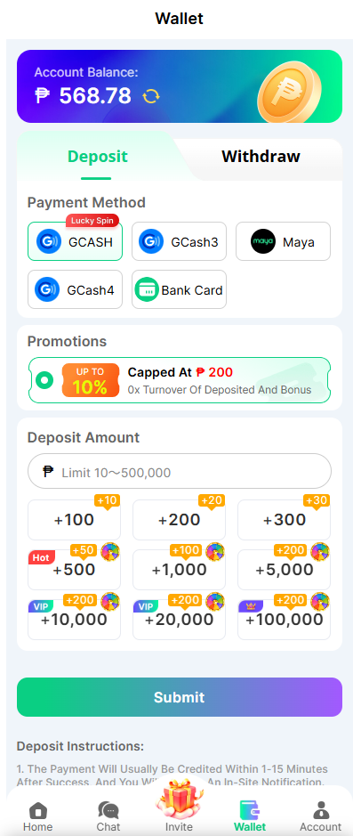
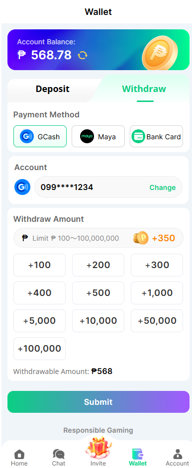
现状截图：前台 Wallet 页，2026-11-04 由产品提供。
5. 运营后台需求
后台原型按改动性质分两类（目录栏「原型页面 › 后台页面」下同样分组）。接入 MannyPay 的收款、代付、余额查询接口本身需要开发，后台页面上没有新增功能：
| 分类 | 页面 | 说明 |
|---|---|---|
| 需配置页面 | 在线支付配置、绑定银行配置 | 运营完成配置后渠道才生效：新增 MannyPay 支付配置、设置主备渠道（N1、N16）；银行代付渠道选 MannyPay（N8）。下拉里新增 MannyPay 选项本身需开发 |
| 需联动页面 | 提款记录、财务总览、平台概况 | MannyPay 上线后在现有出款类型、筛选、渠道选项、余额卡片和监控标签里同步出现，规则和口径沿用现有（N9、N10、N12、N13、N14、N15、N17） |
5.0 联动位置总览
MannyPay 上线后需要出现的全部后台位置如下，规则见对应编号。
| 方向 | 位置 | 本需求改动 | 功能点 | 现状截图 |
|---|---|---|---|---|
| 充值 | 在线支付配置 › 新增 / 编辑 › 支付类型 | 新增 MannyPay（N1） | F02-01 | 5.1 |
| 充值 | 在线支付配置 › 支付渠道动态配置 | MannyPay 参与主备切换（N16） | F02-02 | 5.1 |
| 充值 | 前台 Wallet › Deposit › Payment Method | 新增一个由在线支付配置生成的标签（N1） | F01-01 | 4 |
| 出款 | 绑定银行配置 › 添加 / 编辑 › 代付渠道；批量替换代付渠道 | 新增 MannyPay，列表「代付渠道」列直接显示（N8、N11） | F03-01 | 5.2 |
| 出款 | 提款记录 › 待处理订单 › 出款 › 三方代付 | 出款类型新增 MannyPay（N9） | F03-02 | 5.3 |
| 出款 | 提款记录 › 出款异常单 › 重新出款 | 出款渠道新增 MannyPay（N9） | F03-03 | 5.3 |
| 出款 | 提款记录 › 出款结果、异常记录、渠道切换记录 | MannyPay 出款结果处理、熔断告警和切换记录（N10、N12、N17） | F03-04 | 5.3 |
| 财务 | 财务总览 › 财务总表 › 充值渠道、出款渠道 | 筛选新增 MannyPay（N14） | F04-01 | 5.4 |
| 财务 | 财务总览 › 手续费设置 › 新增规则 | 充值、提款类型的渠道新增 MannyPay（N13） | F04-02 | 5.4 |
| 财务 | 平台概况 › 财务数据 | 新增资金余额(MannyPay)卡片（N15） | F04-03 | 5.5 |
| 监控 | 平台概况 › 监控大盘 › 业务指标实时监控 | 渠道标签新增 MannyPay（N14） | F04-04 | 5.5 |
接口响应、兼容性、密钥存储、HTTPS、限流等非功能要求由技术按现有标准执行；出款发起 / 成功 / 失败埋点见 6. 数据埋点。
5.1 在线支付配置
原型：在线支付配置。菜单：充值配置 › 在线支付配置。
| 功能 | 说明 |
|---|---|
| F02-01 支付类型 | 下拉新增 MannyPay；「新增 / 编辑」弹窗的字段、顺序和必填校验沿用现有「添加在线支付配置」（N1）。 |
| F02-01 金额、状态、维护说明 | 见 N2、N7。 |
| F02-01 列表筛选 | 支付类型筛选新增 MannyPay。 |
| F02-02 支付渠道动态配置 | MannyPay 配置可被选为其他配置的备用渠道，也可设自己的备用渠道（N16）。 |
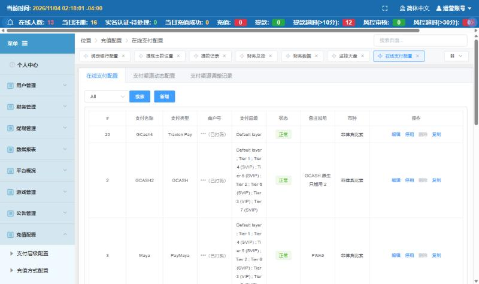
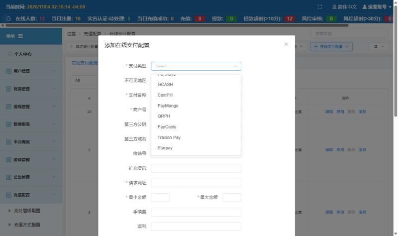
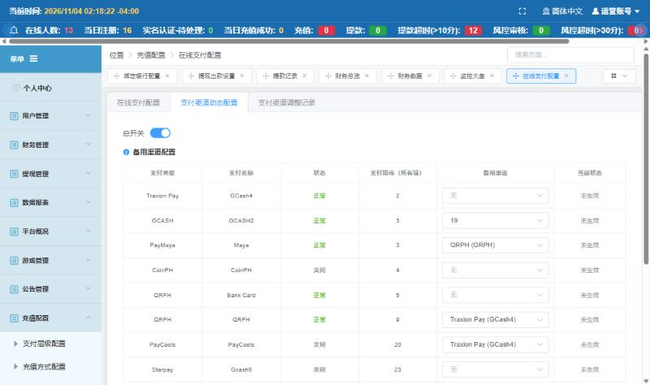
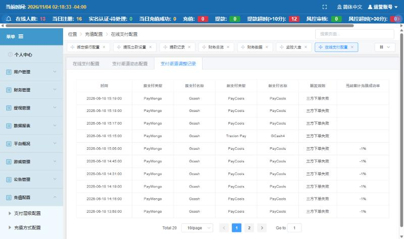
现状截图：QA 后台，2026-11-04 截取，会员名、姓名、卡号、商户号等敏感数据已打码；点击看大图。
5.2 绑定银行配置
原型：绑定银行配置。菜单：充值配置 › 绑定银行配置。
| 功能 | 说明 |
|---|---|
| F03-01 代付渠道 | 「添加 / 编辑银行配置 › 代付渠道」可选择 MannyPay，列表「代付渠道」列直接显示（N8、N11）。 |
| F03-01 批量替换代付渠道 | 可替换为 MannyPay（N8）。 |


现状截图：QA 后台，2026-11-04 截取，会员名、姓名、卡号、商户号等敏感数据已打码；点击看大图。
5.3 提款记录
原型：提款记录。菜单：财务管理 › 提款记录。
| 功能 | 说明 |
|---|---|
| F03-02 三方出款 | 出款类型新增 MannyPay，不按金额置灰（N9、N10）。弹窗右上角 × 关闭，等同取消。 |
| F03-03 重新出款 | 出款渠道新增 MannyPay，规则同三方出款。 |
| F03-04 出款中和结果 | 见 N12：排队、无响应、超时显示沿用现有；明确失败才转入出款异常单，异常原因显示「其它：MannyPay 返回的原因」；转单后又收到成功时标记「疑似重复出款」并告警。 |
| F03-04 异常记录、渠道切换记录 | MannyPay 出款纳入现有渠道熔断告警和切换记录（N17）。 |
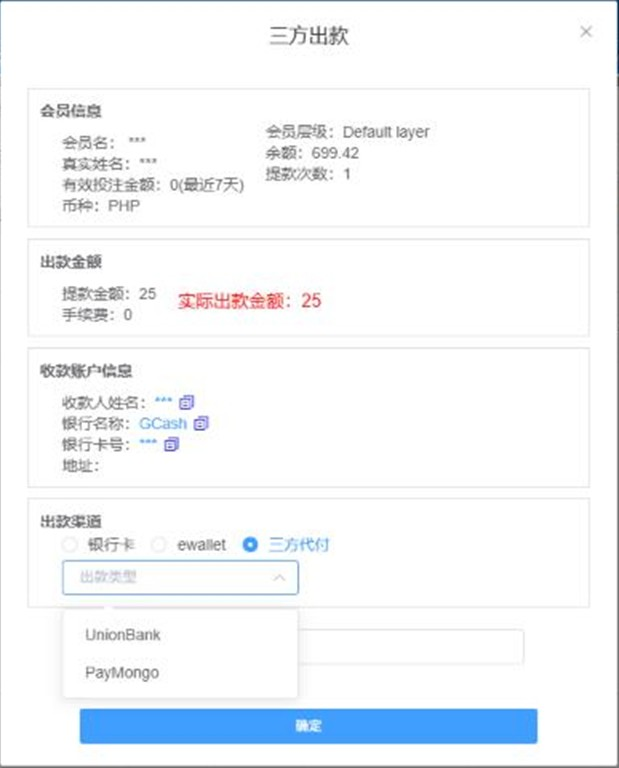
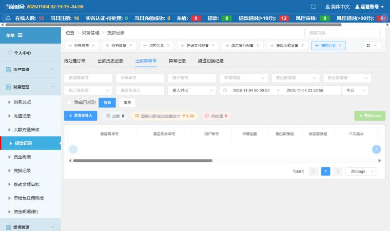
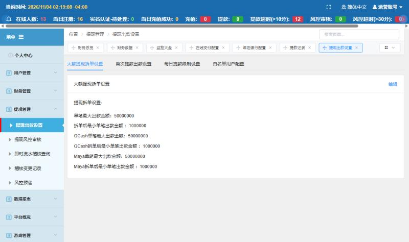
现状截图：QA 后台，2026-11-04 截取，会员名、姓名、卡号、商户号等敏感数据已打码；点击看大图。
5.4 财务总览
原型：财务总览。菜单：财务管理 › 财务总览。
| 功能 | 说明 |
|---|---|
| F04-01 财务总表 | 充值渠道、出款渠道筛选新增 MannyPay（N14）。 |
| F04-02 手续费设置 | 新增规则的渠道新增 MannyPay（N13）。 |


现状截图：QA 后台，2026-11-04 截取，会员名、姓名、卡号、商户号等敏感数据已打码；点击看大图。
5.5 平台概况
原型：平台概况。菜单：平台概况 › 财务数据、监控大盘。
| 功能 | 说明 |
|---|---|
| F04-03 资金余额(MannyPay) | 余额显示和颜色见 N15。 |
| F04-04 监控大盘渠道标签 | 新增 MannyPay（N14）。 |
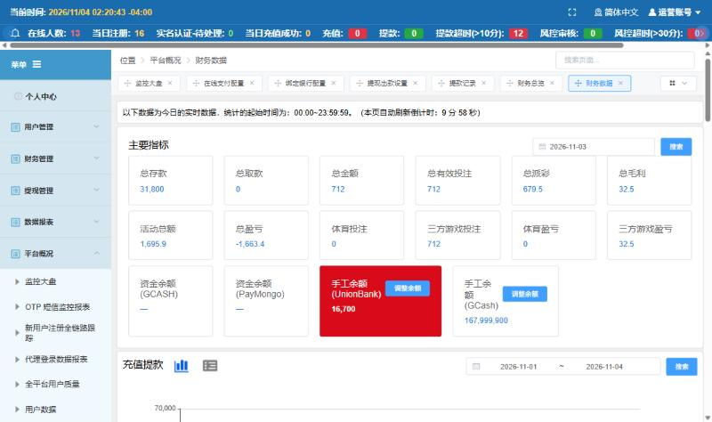
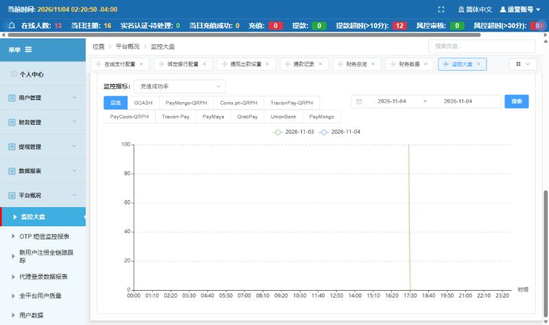
现状截图：QA 后台，2026-11-04 截取，会员名、姓名、卡号、商户号等敏感数据已打码；点击看大图。
5.6 列表分页
| 列表（所在页面） | 分页方式 | 每页条数（默认 / 可选） | 默认排序 | 筛选、搜索、操作后停在哪一页 | 空列表 / 加载失败 | 导出 |
|---|---|---|---|---|---|---|
| 在线支付配置列表 | 页码分页 | 20 / 10、20、50、100 | 沿用现有 | 筛选回到第 1 页；编辑、启停后停在当前页 | 暂无数据；加载失败沿用现有 | 不涉及 |
| 绑定银行配置列表 | 页码分页 | 20 / 10、20、50、100 | 沿用现有 | 编辑、批量替换后停在当前页 | 暂无数据 | 不涉及 |
| 待处理订单、出款异常单 | 页码分页 | 沿用现有 | 沿用现有 | 出款失败转入异常单后，待处理订单停在当前页，当前页没有数据时回到上一页 | 暂无数据 | 沿用现有 |
| 财务总表、手续费规则 | 页码分页 | 20 / 10、20、50、100 | 沿用现有 | 查询回到第 1 页；新增规则后停在当前页 | 暂无数据 | 财务总表导出全部符合筛选的数据，沿用现有 |
5.7 帮助提示内容
| 数据项 / 操作 | 说明内容 |
|---|---|
| 备用渠道（支付渠道动态配置） | 本渠道下单失败或成功率下降时，前台坑位自动切到这里选的渠道，前台名称不变。不能选本渠道。 |
| 出款通道（三方出款） | MannyPay 代付走 InstaPay，实时到账。实际出款金额超过 InstaPay 单笔上限（₱50,000）时 MannyPay 返回失败，订单转入出款异常单。 |
| 异常原因（出款异常单） | MannyPay 明确返回失败时显示「其它：MannyPay 返回的原因」，如渠道余额不足、收款账户无效、超过单笔上限。 |
| 资金余额(MannyPay) | MannyPay 账户当前可用余额，打开、刷新页面和页面自动刷新时更新。低于 ₱5,000,000 显示黄色，低于 ₱2,000,000 显示红色。 |
6. 数据埋点
6.1 分析目标
MannyPay 充值转化率和失败环节、出款成功率和到账时长，用于判断是否扩大 MannyPay 的坑位和代付银行范围。
6.2 分析维度
| 维度 | 业务含义 |
|---|---|
| 端 | H5 / iOS / Android / PC |
| 金额段 | 按 ₱100 以下、₱100–₱1,000、₱1,000–₱10,000、₱10,000 以上分段（含下限不含上限） |
6.3 事件清单
| 事件 | 触发时机 | 业务口径 | 端 | 功能点 |
|---|---|---|---|---|
| 选择 MannyPay 标签 | Deposit 页点选 MannyPay 配置对应的标签 | 用户、端 | 前台 | F01-01 |
| MannyPay 下单 | 点「提交」后下单成功或失败 | 订单号、金额、结果、失败原因 | 前台 | F01-02 |
| MannyPay 充值结果 | 订单变为成功或失败 | 订单号、金额、结果、从下单到结果的时长 | 服务端 | F01-03 |
| MannyPay 出款发起 / 成功 / 失败 | 发起代付、取得结果 | 提现单号、金额、结果、失败原因、到账时长 | 服务端 | F03-04 |
6.4 运营看板指标
| 指标 | 口径 | 阈值 |
|---|---|---|
| MannyPay 充值成功率 | 沿用监控大盘现有口径：成功订单数 ÷ 下单成功订单数，下单失败的订单不计入分母；订单按下单时间归属 GMT+8 自然日，主备切换后的订单计入实际下单渠道（N14） | 沿用监控大盘现有充值成功率预警 |
| MannyPay 出款成功率 | 沿用监控大盘现有口径：出款成功笔数 ÷ 向 MannyPay 发起的出款笔数（GMT+8 自然日） | 沿用监控大盘现有提款成功率预警 |
| MannyPay 余额 | 账户可用余额 | 见 N15 |
6.5 实施要求
- 每日按 GMT+8 自然日核对：财务总表 MannyPay 充值、出款笔数和金额与 MannyPay 商户后台一致，差异转财务处理；出款账户余额补款方式见 Q11。
7. 接口与异常
| 场景 | 处理方式 | 用户提示 |
|---|---|---|
| MannyPay 下单失败或超时 | 订单记失败，计入渠道下单失败次数（N3） | 「This method is unavailable. Please try another.」 |
| 停在充值页期间配置改为维护 / 停用 | 点「提交」按最新配置校验，不下单并刷新支付方式；坑位已切到备用渠道的按备用渠道下单（N7） | 「This method is unavailable. Please try another.」 |
| 连续点击「提交」 | 提交中按钮置灰，只生成一笔订单 | - |
| 重复收到成功通知 | 只入账一次（N5） | - |
| 通知金额与订单不一致 | 不自动入账，转人工核对；通过时按实付金额入账（N5） | 订单显示处理中 |
| 没收到通知 | 平台主动查询订单结果后处理；过期仍未付款记失败（N4） | 处理中 → 成功或失败 |
| 过期记失败后又收到成功 | 金额一致时改为成功并入账一次，发短信和 push，不补弹窗（N4） | 失败 → 成功 |
| 签名校验不通过的通知 | 不处理，记录告警 | - |
| MannyPay 余额不足 | 出款失败，转入出款异常单，原因「渠道余额不足」（N12） | 运营看到异常原因；玩家看到提款处理中（沿用现有） |
| 收款账户无效 | 出款失败，转入出款异常单，原因写 MannyPay 返回的原因 | 同上 |
| 出款结果未知（超时） | 保持出款中，查询确认后再更新，不重新发起；超过 30 分钟仍无结果由运营转技术核查（N12） | - |
| 转入异常单或换渠道后又收到成功 | 不改变现有出款结果，标记「疑似重复出款」并告警，财务核对追回（N12） | - |
| 返回成功但玩家未到账 | 按现有出款异常单补单流程，补单前先向 MannyPay 查询确认（N12） | 按现有客服流程 |
| 余额查询失败 | 卡片显示「-」和「查询失败，请稍后刷新」（N15） | - |
8. 验收标准
8.1 验收条目
- F02-01 新增 MannyPay 配置、支付名称填 GCash6、状态正常 → 保存成功，前台对应层级的用户在 Deposit 看到 GCash6 标签，其他标签不变。
- F02-02 GCash3 的备用渠道设为 GCash6（MannyPay），GCash3 满足任一动态调整规则 → 坑位切到 MannyPay，前台名称不变，支付渠道调整记录新增一条；切换前已生成的订单仍按 PayMongo 处理。
- F02-02 设置 GCash6 的备用渠道 → 下拉里没有 GCash6 本身；把备用渠道改为维护后 GCash3 满足切换规则 → 不切换，保持 GCash3。
- F01-01 配置区间 ₱100–₱50,000、层级每笔最高充值 ₱30,000：输入 99 和 30,001 → 提示区间错误；输入 100 和 30,000 → 可提交。绕过前端直接下单同样拦截。
- F01-01 状态改为维护 → 前台置灰并显示维护说明；停用 → 前台不显示。
- F01-02 点「提交」→ 打开 MannyPay 二维码页，充值记录新增一笔处理中订单；连续点两次只生成一笔。
- F01-02 MannyPay 下单失败 → 不打开支付页，提示「This method is unavailable. Please try another.」。
- F01-02 停在充值页时后台把 GCash6 改为维护 → 点「提交」不下单，提示「This method is unavailable. Please try another.」，支付方式刷新为置灰。
- F01-03 扫码付 ₱500 → 余额 +₱500，弹出充值成功弹窗；重复推送同一成功通知 → 余额不再增加。
- F01-03 关闭二维码页不付款 → 订单处理中，不弹成功弹窗；二维码过期 → 订单失败。
- F01-03 过期记失败的订单收到金额一致的成功结果 → 订单改为成功，余额只增加一次，收到短信和 push，不弹成功弹窗。
- F01-03 订单 ₱500、实付 ₱400 → 订单处理中不入账；运营人工通过 → 余额 +₱400，赠送和流水按 ₱400 计算，记录操作人；驳回 → 订单失败。
- F01-03 充值 ₱100（GCash6 最小金额）到账 → 短信和 push 都收到；后台把最小金额改为 0 → 不能保存。
- F03-01 编辑 UB 的代付渠道选 MannyPay 并确定 → 列表「代付渠道」显示 MannyPay，之后提款到 UB 的订单由 MannyPay 出款；出款中的订单不受影响。
- F03-04 给 MannyPay 不支持的银行选了 MannyPay 后出款 → 出款失败，订单转入出款异常单，异常原因显示 MannyPay 返回的原因。
- F03-04 实际出款金额 ₱50,000.00 和 ₱50,000.01 → 都可以选 MannyPay；₱50,000.01 的订单 MannyPay 返回失败 → 订单转入出款异常单，异常原因显示 MannyPay 返回的信息，可换其他渠道重新出款；自动代付遇到 ₱50,000.01 的订单 → 照常发起，失败后同样转入出款异常单。
- F03-04 「大额提现拆单设置」的单笔最大出款金额设为 ₱50,000 后，用户提现到 GCash ₱120,000 → 按现有拆单规则拆成多笔子订单，每笔 ≤ ₱50,000，走 MannyPay 都能出款成功（拆单规则沿用现有）。
- F03-02 选 MannyPay 出款后 → 订单出款中，出款和驳回按钮置灰；MannyPay 返回成功 → 出款成功。
- F03-04 MannyPay 返回余额不足 → 订单转入出款异常单，异常原因「其它：渠道余额不足」；选其他渠道重新出款并成功 → 订单变为出款成功，离开出款异常单。
- F03-04 订单转入出款异常单并换渠道出款后，MannyPay 又返回成功 → 出款结果不变，提款记录标记「疑似重复出款」并告警。
- F03-04 MannyPay 出款连续失败达到现有熔断条件 → 异常记录出现 MannyPay 告警。
- F04-01 财务总表筛选充值渠道 MannyPay → 只显示 MannyPay 数据，笔数与充值记录一致。
- F04-02 新增「提款 + MannyPay」规则 ₱10 → 之后成功的 MannyPay 出款手续费为 ₱10；再新增同一类型同一渠道的启用规则 → 提示「该渠道已有启用的规则」；手续费值填 -1 或 1.234 → 不能保存，填 0 或 1.23 → 可保存。
- F04-03 余额 ₱5,000,000.00 → 正常；₱4,999,999.99 → 黄色；₱2,000,000.00 → 黄色；₱1,999,999.99 → 红色；查询失败 → 显示「-」。
- F04-04 监控大盘选 MannyPay → 成功率只统计 MannyPay 订单。
8.2 跨端验收矩阵
| 验收点 | 功能点编号 | H5 | PC | iOS | Android | 后台 |
|---|---|---|---|---|---|---|
| MannyPay 标签显示、维护、停用 | F01-01 | ✓ | ✓ | ✓ | ✓ | - |
| 打开和关闭二维码支付页 | F01-02 | ✓ | ✓ | ✓ | ✓ | - |
| 入账和成功弹窗 | F01-03 | ✓ | ✓ | ✓ | ✓ | ✓ |
| 后台配置、出款、报表、监控 | F02-01 | - | - | - | - | ✓ |
9. 上线方式
- 上线时：① 状态为「停用」时填写对接参数；② 层设置只选测试层级，状态改为「正常」；③ 用测试层级账号收款、出款各验证一笔。
- ④ 验证通过后：层设置放开到目标层级；观察期成功率目标见 Q14；绑定银行配置按需把银行切到 MannyPay。
- 回滚：在线支付配置改为停用；绑定银行配置批量替换回原代付渠道。出款中的 MannyPay 订单按 N12 等结果，不重新发起。
10. 风险与依赖
| 风险 | 等级 | 应对 |
|---|---|---|
| 重复入账或重复出款造成资金损失 | 高 | N5、N12：只入账一次；出款中不能再次发起；结果未知先查询；明确失败才转异常单，转单后又成功的标记「疑似重复出款」并告警 |
| MannyPay 余额不足导致出款大面积失败 | 中 | N15 余额预警；N17 纳入渠道熔断告警；大面积失败时批量替换代付渠道换回原渠道；失败订单转入异常单后换渠道重新出款 |
| 单笔 > ₱50,000 的 MannyPay 出款会失败，需人工换渠道 | 中 | 按现有出款异常单流程处理；运营可按需调整大额提现拆单设置（N10） |
11. 待确认事项
| 编号 | 事项 | 负责人 | 预计确认时间 | 状态 |
|---|---|---|---|---|
| Q1 | 二维码有效期多长。 结论：以平台现有规则和 MannyPay 给出的规则为准（N4）。 | Joshua | 2026-11-04 | 已确认 |
| Q2 | MannyPay 入款、出款每笔手续费。 结论：在「手续费设置」后台配置，PRD 不写死（N13）。 | Joshua | 2026-11-04 | 已确认 |
| Q3 | 出款金额 > ₱50,000 时怎么处理。 结论：按平台现有方式，不做单笔上限拦截；超额由 MannyPay 返回失败，订单转入出款异常单后换渠道重新出款；不使用 PESONet（N10）。 | Joshua | 2026-11-04 | 已确认 |
| Q4 | MannyPay 支持银行和平台银行的对应关系由谁维护。 结论：由运营维护，只在代付渠道里新增 MannyPay，不新增列、不自动同步（N11）。 | Joshua | 2026-11-04 | 已确认 |
| Q5 | 余额预警线用多少。 结论：固定 ₱5,000,000 / ₱2,000,000，不做后台设置（N15）。 | Joshua | 2026-11-04 | 已确认 |
| Q6 | 前台支付方式名称。 结论：按现有流程在 Deposit 新增一个标签，名称取后台「支付名称」（示例 GCash6），加入主备切换（N1、N16）。 | Joshua | 2026-11-04 | 已确认 |
| Q7 | 本期是否做 Scan-to-Pay 和 Intrabank 划转。 结论：不做。 | Joshua | 2026-11-04 | 已确认 |
| Q8 | 出款结果怎么同步。 结论：结果未知时保持出款中，平台查询确认后更新；收到通知按通知更新，具体实现由技术确定（N12）。 | Joshua | 2026-11-04 | 已确认 |
| Q9 | 大额提现拆单对银行卡提现是否生效（不生效时，超过 ₱50,000 的银行卡提现走 MannyPay 都会失败）。 | 后端 | 2026-11-07 | 待确认 |
| Q10 | ₱50,000 单笔上限和拆单金额，与申请金额还是扣除手续费后的实际出款金额比较；本文暂按实际出款金额（N10）。 | 后端 | 2026-11-07 | 待确认 |
| Q11 | MannyPay 出款账户余额不足时由谁、用什么方式补款。 | 财务 | 2026-11-07 | 待确认 |
| Q12 | 在线支付配置的「手续费」字段和财务总览「手续费设置」的规则分别计算什么，是否会重复计算。 | 财务、运营 | 2026-11-07 | 待确认 |
| Q13 | 资金余额(MannyPay)卡片是否需要在后台打开「余额查询开关」才显示。 | 后端 | 2026-11-07 | 待确认 |
| Q14 | 上线观察期多长，MannyPay 充值、出款成功率达到多少才放开到全部层级。 | 老板、运营 | 2026-11-07 | 待确认 |
| Q15 | 玩家用他人 GCash 扫码付款时是否拦截或人工审核。 | 风控 | 2026-11-07 | 待确认 |
| Q16 | 现有充值活动和挽留弹窗是否把 MannyPay 标签纳入（N18）。 | 运营 | 2026-11-07 | 待确认 |
| Q17 | 主备切换的切回方式、备用渠道不正常时不切换、互为备用不连锁切换，与现有实现核对后定稿（N16）。 | 后端 | 2026-11-07 | 待确认 |
11.1 未定文案清单
| 文案位置 | 示意文案 | 负责人 | 状态 |
|---|---|---|---|
| MannyPay 下单失败提示 | This method is unavailable. Please try another. | 运营 | 已定稿（线上已有同类提示时用线上文案） |
| 维护说明示例 | Under maintenance, back at 18:00 | 运营 | 待确认 |
12. 各角色协作 Tips
设计
- 先出文案表（11.1）；新标签沿用现有 GCash 类标签样式和图标，不出新图。
前端
- 「提交」按钮提交中置灰；二维码页打开方式复用现有三方支付页。
后端
- 入账和出款都按「只处理一次」设计，重复通知和重复提交不产生重复资金变动。
测试
- 重点验 N4、N5、N10、N12、N15、N16 的边界值、重复通知和转单后又成功的场景。
运营
- 上线先只开测试层级；只给 MannyPay 可出款的银行选 MannyPay，切代付渠道前先看余额卡片。
客服
- MannyPay 出款实时到账，超时未到账按客服 QA 转交。
附录 A 评审清单核对
A.1 通用评审清单（知识库「四、通用需求评审清单」12 项）
| 项 | 结论 | 位置 |
|---|---|---|
| 1. 合规 | 不涉及新增合规要求，沿用现有支付渠道管理 | - |
| 2. 资金 | 涉及：入账只一次、金额一致才入账、出款防重复 | N5、N12 |
| 3. 口径 | 涉及：限额、手续费、报表、成功率口径 | N2、N13、N14 |
| 4. 防刷与风控 | 沿用现有充值订单上限和提款风控 | N6 |
| 5. 多端范围 | H5 / PC / iOS / Android 同一规则 | 8.2 跨端验收矩阵 |
| 6. 后台配套 | 5 个后台页面 | 5. 运营后台需求 |
| 7. 系统约束 | InstaPay 单笔上限 ₱50,000，超额由 MannyPay 返回失败 | N10 |
| 8. 性能 | 余额只在打开或刷新页面时查询 | N15 |
| 9. 安全 | 通知签名校验不通过不处理 | N5 |
| 10. 上线方式 | 先停用、测试层级验证、再放开；可回滚 | 9. 上线方式 |
| 11. 验收 | 含边界值和异常 | 8. 验收标准 |
| 12. 工单规范 | 建单时按 Jira 标题站点前缀规则 | - |
A.2 异常边界覆盖（规范第五章第 0 节 8 类）
| 类别 | 本需求处理位置 |
|---|---|
| 边界值 | N2、N10、N15；8.1 验收条目 |
| 时间 | N4 二维码过期；全文 GMT+8 |
| 异常 | 7. 接口与异常 |
| 并发与重复 | N3、N5、N12 |
| 状态 | N6、N7、N8 |
| 用户与权限 | N1 层设置、不可见地区 |
| 端与版本 | 4. 前台页面一（各端打开方式） |
| 数据 | N13 已成功订单不重算；N14 报表口径；6.5 上线核对 |
附录 B 原型对照表
| 原型页面 | 功能点 | 可演示的交互 | 是否模拟 |
|---|---|---|---|
| 充值页 | F01-01 充值方式展示与金额校验 | MannyPay 标签、切到备用渠道、快捷金额、金额校验、维护 / 停用 | 真实交互 + 模拟操作面板 |
| 充值页 | F01-02 二维码支付 | 打开 / 关闭二维码页、下单失败 | 模拟操作面板模拟 |
| 充值页 | F01-03 支付结果与入账 | 成功弹窗、处理中、过期失败、重复通知 | 模拟操作面板模拟 |
| 在线支付配置 | F02-01 在线支付配置新增 MannyPay | 新增 / 编辑、校验、分页、空列表 | 真实交互 |
| 在线支付配置 | F02-02 主备渠道 | 支付渠道动态配置：备用渠道选择、GCash3 达到切换规则后切到 GCash6（MannyPay） | 真实交互 + 模拟按钮 |
| 绑定银行配置 | F03-01 绑定银行配置新增 MannyPay | 编辑代付渠道、批量替换、多页 / 空列表 | 真实交互 |
| 提款记录 | F03-04 出款通道与结果 | 三方出款、重新出款、出款中置灰、成功 / 失败（含超过 InstaPay 单笔上限）转异常单、分页 | 模拟操作面板模拟 MannyPay 结果 |
| 财务总览 | F04-02 手续费设置 | 渠道筛选、空数据、新增规则、重复规则 | 真实交互 |
| 平台概况 | F04-03 MannyPay 余额卡片 | 余额颜色边界、查询失败、监控渠道标签 | 模拟场景 |
附录 C 前台文案中英对照
本表由页面自动读取 assets/proto-en.js 生成；开发按英文列实现界面文案。
| 序号 | 中文（原型制作用） | 英文（界面实际文案） |
|---|
附录 D 页面控件说明
本表由页面自动读取 assets/dev-notes.js 生成；开发和产品角色查看原型时，控件旁的研发说明标记显示同一份内容。
| 编号 | 控件 | 说明 | 计算公式与规则 |
|---|